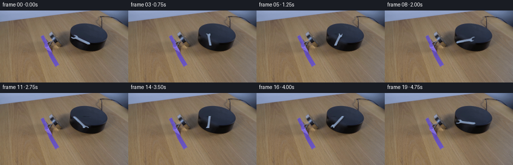
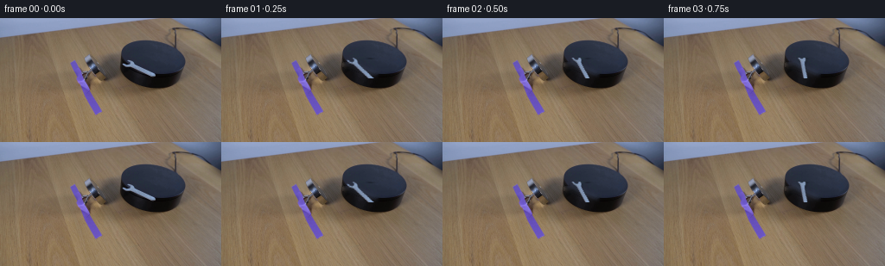
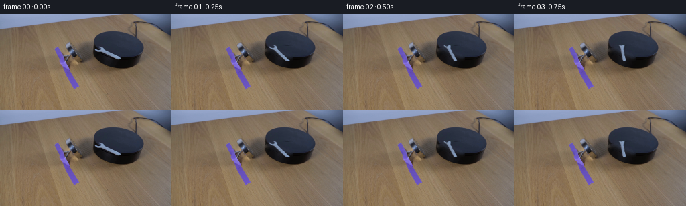
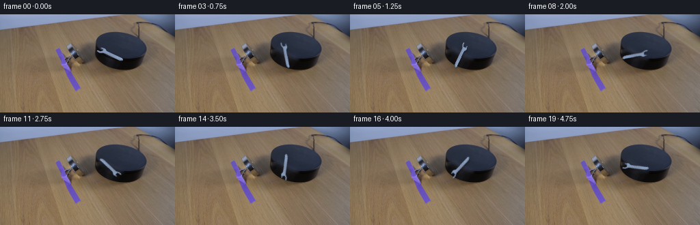

CODING AGENTS AS PIXEL WORLD MODELS
traex/DeepSeek-V4.1-Flash · 0100
点击播放 · 原生 RGB 像素
逐轮保存的候选
回放视频、检查图与代码变化。
每份候选均可单独播放。实际图片检查记录在下方工具轨迹中。
候选 01播放与检查图
点击播放 · 原生 RGB 像素


展开代码变化
--- 上一保存版本
+++ 本次保存版本
@@ -0,0 +1,134 @@
+from pathlib import Path
+
+import cv2
+import numpy as np
+from PIL import Image
+
+import artifact_io
+
+
+WIDTH = 256
+HEIGHT = 144
+FRAME_COUNT = 20
+FPS = 4
+
+# The wrench is the small bright steel object on the dark slab. Its open jaw
+# sits at the upper-left and the handle extends toward the lower-right.
+SPRITE_BOX = (140, 46, 182, 70) # x0, y0, x1, y1
+PIVOT = (161.0, 59.0)
+
+
+def smoothstep(edge0, edge1, values):
+ t = np.clip((values - edge0) / (edge1 - edge0), 0.0, 1.0)
+ return t * t * (3.0 - 2.0 * t)
+
+
+def extract_wrench(source):
+ x0, y0, x1, y1 = SPRITE_BOX
+ crop = source[y0:y1, x0:x1].astype(np.float32)
+ rgb = crop / 255.0
+ luma = 0.2126 * rgb[..., 0] + 0.7152 * rgb[..., 1] + 0.0722 * rgb[..., 2]
+
+ # The slab is a dim blue-gray; reflected light makes the steel wrench much
+ # brighter and slightly cooler. A soft threshold retains the beveled edges.
+ alpha = smoothstep(0.205, 0.305, luma)
+ alpha *= smoothstep(0.015, 0.065, rgb[..., 2] - rgb[..., 0])
+
+ # Keep the coherent tool and discard isolated slab glints.
+ seed = (alpha > 0.22).astype(np.uint8)
+ count, labels, stats, _ = cv2.connectedComponentsWithStats(seed, 8)
+ kept = np.zeros_like(seed)
+ for label in range(1, count):
+ if stats[label, cv2.CC_STAT_AREA] >= 4:
+ kept[labels == label] = 1
+ kept = cv2.morphologyEx(kept, cv2.MORPH_CLOSE, np.ones((2, 2), np.uint8))
+ alpha *= cv2.GaussianBlur(kept.astype(np.float32), (3, 3), 0.55)
+ alpha = np.clip(alpha * 1.18, 0.0, 1.0)
+
+ rgba = np.dstack((crop, alpha * 255.0))
+ return rgba.astype(np.float32)
+
+
+def repair_slab(source, sprite):
+ x0, y0, x1, y1 = SPRITE_BOX
+ alpha = sprite[..., 3] / 255.0
+ mask = (alpha > 0.05).astype(np.uint8) * 255
+ mask = cv2.dilate(mask, np.ones((5, 5), np.uint8), iterations=1)
+ full_mask = np.zeros((HEIGHT, WIDTH), np.uint8)
+ full_mask[y0:y1, x0:x1] = mask
+ bgr = cv2.cvtColor(source, cv2.COLOR_RGB2BGR)
+ repaired = cv2.inpaint(bgr, full_mask, 5, cv2.INPAINT_TELEA)
+ repaired = cv2.cvtColor(repaired, cv2.COLOR_BGR2RGB)
+
+ # Inpainting can flatten the slab's gentle blue reflection. Restore a small
+ # amount of local low-frequency texture without bringing the old tool back.
+ local = cv2.GaussianBlur(source, (0, 0), 5.0).astype(np.float32)
+ repaired_f = repaired.astype(np.float32)
+ feather = cv2.GaussianBlur((full_mask > 0).astype(np.float32), (0, 0), 4.0)
+ feather = np.clip(feather * 0.28, 0.0, 1.0)[..., None]
+ repaired_f = repaired_f * (1.0 - feather) + local * feather
+ return np.clip(repaired_f, 0.0, 255.0).astype(np.uint8)
+
+
+def warp_sprite(sprite, angle):
+ h, w = sprite.shape[:2]
+ local_pivot = (PIVOT[0] - SPRITE_BOX[0], PIVOT[1] - SPRITE_BOX[1])
+ matrix = cv2.getRotationMatrix2D(local_pivot, angle, 1.0)
+
+ alpha = sprite[..., 3:4] / 255.0
+ premultiplied = np.dstack(
+ (sprite[..., :3] * alpha, sprite[..., 3])
+ ).astype(np.float32)
+ warped = cv2.warpAffine(
+ premultiplied,
+ matrix,
+ (w, h),
+ flags=cv2.INTER_LINEAR,
+ borderMode=cv2.BORDER_CONSTANT,
+ borderValue=(0.0, 0.0, 0.0, 0.0),
+ )
+ warped_alpha = np.clip(warped[..., 3:4] / 255.0, 0.0, 1.0)
+ color = np.divide(
+ warped[..., :3],
+ np.maximum(warped_alpha, 1.0 / 255.0),
+ out=np.zeros_like(warped[..., :3]),
+ where=warped_alpha > (0.5 / 255.0),
+ )
+ return color, warped_alpha
+
+
+def render_frame(base, sprite, angle):
+ x0, y0, x1, y1 = SPRITE_BOX
+ color, alpha = warp_sprite(sprite, angle)
+ out = base.astype(np.float32).copy()
+ patch = out[y0:y1, x0:x1]
+
+ # Soft contact shadow, fixed in the light's lower-right direction.
+ shadow = cv2.GaussianBlur(alpha[..., 0], (0, 0), 1.35)
+ shadow = np.roll(shadow, shift=(2, 1), axis=(0, 1))
+ patch *= (1.0 - 0.22 * shadow[..., None])
+
+ # Alpha-composite the rigid steel tool over the repaired slab.
+ patch[:] = color * alpha + patch * (1.0 - alpha)
+ return np.clip(out, 0.0, 255.0).astype(np.uint8)
+
+
+def main():
+ case_dir = Path(__file__).resolve().parent
+ source = np.asarray(Image.open(case_dir / "first_frame.png").convert("RGB"))
+ sprite = extract_wrench(source)
+ repaired = repair_slab(source, sprite)
+
+ frames = np.empty((FRAME_COUNT, HEIGHT, WIDTH, 3), dtype=np.uint8)
+ frames[0] = source
+ for index in range(1, FRAME_COUNT):
+ # One complete clockwise revolution over the five-second clip.
+ angle = -360.0 * index / FRAME_COUNT
+ frames[index] = render_frame(repaired, sprite, angle)
+
+ assert np.array_equal(frames[0], source)
+ artifact_io.save(frames, case_dir)
+
+
+if __name__ == "__main__":
+ main()
候选 02播放与检查图
点击播放 · 原生 RGB 像素

展开代码变化
--- 上一保存版本
+++ 本次保存版本
@@ -125,6 +125,12 @@
# One complete clockwise revolution over the five-second clip.
angle = -360.0 * index / FRAME_COUNT
frames[index] = render_frame(repaired, sprite, angle)
+ changed = np.any(frames[index] != source, axis=2)
+ changed[:SPRITE_BOX[1]] = False
+ changed[SPRITE_BOX[3]:] = False
+ changed[:, :SPRITE_BOX[0]] = False
+ changed[:, SPRITE_BOX[2]:] = False
+ frames[index][~changed] = source[~changed]
assert np.array_equal(frames[0], source)
artifact_io.save(frames, case_dir)
候选 03播放与检查图
候选 04播放与检查图
点击播放 · 原生 RGB 像素

展开代码变化
--- 上一保存版本
+++ 本次保存版本
@@ -15,6 +15,7 @@
# The wrench is the small bright steel object on the dark slab. Its open jaw
# sits at the upper-left and the handle extends toward the lower-right.
SPRITE_BOX = (140, 46, 182, 70) # x0, y0, x1, y1
+COMPOSITE_BOX = (128, 30, 194, 90) # x0, y0, x1, y1
PIVOT = (161.0, 59.0)
@@ -71,14 +72,18 @@
def warp_sprite(sprite, angle):
- h, w = sprite.shape[:2]
- local_pivot = (PIVOT[0] - SPRITE_BOX[0], PIVOT[1] - SPRITE_BOX[1])
+ cx0, cy0, cx1, cy1 = COMPOSITE_BOX
+ h, w = cy1 - cy0, cx1 - cx0
+ local_pivot = (PIVOT[0] - cx0, PIVOT[1] - cy0)
matrix = cv2.getRotationMatrix2D(local_pivot, angle, 1.0)
- alpha = sprite[..., 3:4] / 255.0
- premultiplied = np.dstack(
- (sprite[..., :3] * alpha, sprite[..., 3])
- ).astype(np.float32)
+ source_alpha = sprite[..., 3:4] / 255.0
+ premultiplied = np.zeros((h, w, 4), np.float32)
+ x0, y0, x1, y1 = SPRITE_BOX
+ sx0, sy0 = x0 - cx0, y0 - cy0
+ premultiplied[sy0:sy0 + sprite.shape[0], sx0:sx0 + sprite.shape[1]] = np.dstack(
+ (sprite[..., :3] * source_alpha, sprite[..., 3])
+ )
warped = cv2.warpAffine(
premultiplied,
matrix,
@@ -98,7 +103,7 @@
def render_frame(base, sprite, angle):
- x0, y0, x1, y1 = SPRITE_BOX
+ x0, y0, x1, y1 = COMPOSITE_BOX
color, alpha = warp_sprite(sprite, angle)
out = base.astype(np.float32).copy()
patch = out[y0:y1, x0:x1]
@@ -126,10 +131,10 @@
angle = -360.0 * index / FRAME_COUNT
frames[index] = render_frame(repaired, sprite, angle)
changed = np.any(frames[index] != source, axis=2)
- changed[:SPRITE_BOX[1]] = False
- changed[SPRITE_BOX[3]:] = False
- changed[:, :SPRITE_BOX[0]] = False
- changed[:, SPRITE_BOX[2]:] = False
+ changed[:COMPOSITE_BOX[1]] = False
+ changed[COMPOSITE_BOX[3]:] = False
+ changed[:, :COMPOSITE_BOX[0]] = False
+ changed[:, COMPOSITE_BOX[2]:] = False
frames[index][~changed] = source[~changed]
assert np.array_equal(frames[0], source)
候选 05播放与检查图
候选 06播放与检查图
点击播放 · 原生 RGB 像素

展开代码变化
--- 上一保存版本
+++ 本次保存版本
@@ -32,8 +32,8 @@
# The slab is a dim blue-gray; reflected light makes the steel wrench much
# brighter and slightly cooler. A soft threshold retains the beveled edges.
- alpha = smoothstep(0.205, 0.305, luma)
- alpha *= smoothstep(0.015, 0.065, rgb[..., 2] - rgb[..., 0])
+ alpha = smoothstep(0.195, 0.275, luma)
+ alpha *= smoothstep(0.010, 0.050, rgb[..., 2] - rgb[..., 0])
# Keep the coherent tool and discard isolated slab glints.
seed = (alpha > 0.22).astype(np.uint8)
@@ -43,8 +43,8 @@
if stats[label, cv2.CC_STAT_AREA] >= 4:
kept[labels == label] = 1
kept = cv2.morphologyEx(kept, cv2.MORPH_CLOSE, np.ones((2, 2), np.uint8))
- alpha *= cv2.GaussianBlur(kept.astype(np.float32), (3, 3), 0.55)
- alpha = np.clip(alpha * 1.18, 0.0, 1.0)
+ alpha *= cv2.GaussianBlur(kept.astype(np.float32), (3, 3), 0.50)
+ alpha = np.clip(alpha * 1.08, 0.0, 1.0)
rgba = np.dstack((crop, alpha * 255.0))
return rgba.astype(np.float32)
可观测工具轨迹
实际执行的命令与返回图片。
命令 1exit 0
/bin/bash -c "pwd && rg --files -g '"'!*.mp4'"' -g '"'!*.mov'"' -g '"'!*.avi'"' | sort"
命令 2exit 0
/bin/bash -c "sed -n '1,240p' prompt.txt"
命令 3exit 0
/bin/bash -c "sed -n '1,280p' GENERATION_RULES.md"
命令 4exit 0
/bin/bash -c 'file first_frame.png && identify first_frame.png 2>/dev/null || true && ffprobe -v error -show_entries stream=width,height,pix_fmt -of default=nw=1 first_frame.png 2>/dev/null || true'
命令 5exit 0
/bin/bash -c "sed -n '1,260p' player_template.html"
命令 6exit 0
/bin/bash -c "sed -n '1,260p' artifact_io.py"
命令 7exit 0
/bin/bash -c "python - <<'PY'
from PIL import Image
import numpy as np
im=Image.open('first_frame.png').convert('RGB')
a=np.asarray(im)
print('size', im.size, 'mode', im.mode, 'dtype',a.dtype, 'shape',a.shape)
print('min/max', a.reshape(-1,3).min(0), a.reshape(-1,3).max(0))
# dominant exact colors
u,c=np.unique(a.reshape(-1,3),axis=0,return_counts=True)
ix=np.argsort(c)[-25:][::-1]
for i in ix: print(tuple(u[i]), int(c[i]))
PY"命令 8exit 0
/bin/bash -c 'which ffmpeg ffprobe python convert magick || true'
命令 9exit 0
/bin/bash -c "python - <<'PY'
from PIL import Image
import numpy as np
im=np.array(Image.open('first_frame.png').convert('RGB'))
# row stats by 8-pixel bands
for y in range(0,144,8):
a=im[y:y+8]
print(f'y {y:3}-{y+7:3} mean {a.mean((0,1)).round().astype(int)} med {np.median(a.reshape(-1,3),0).astype(int)}')
PY"命令 10exit 0
/bin/bash -c "python - <<'PY'
from PIL import Image
import numpy as np
im=np.array(Image.open('first_frame.png').convert('RGB'))
# quantize to 20 colors via median cut
q=Image.fromarray(im).quantize(colors=20,method=Image.Quantize.MEDIANCUT)
p=q.getpalette(); counts=np.bincount(np.asarray(q).ravel(),minlength=20)
for i in np.argsort(counts)[::-1]: print(i, tuple(p[i*3:i*3+3]), int(counts[i]))
PY"命令 11exit 0
/bin/bash -c "python - <<'PY'
import numpy as np
try:
import cv2; print('cv2',cv2.__version__)
except Exception as e: print('no cv2',e)
try:
import scipy; print('scipy',scipy.__version__)
except Exception as e: print('no scipy',e)
try:
import imageio; print('imageio',imageio.__version__)
except Exception as e: print('no imageio',e)
try:
import matplotlib; print('matplotlib',matplotlib.__version__)
except Exception as e: print('no matplotlib',e)
try:
import skimage; print('skimage',skimage.__version__)
except Exception as e: print('no skimage',e)
PY"命令 12exit 0
/bin/bash -c "python - <<'PY'
from PIL import Image
import numpy as np
im=np.array(Image.open('first_frame.png').convert('RGB'))
# Print RGB at grid points to infer scene geometry
for y in [0,5,10,15,20,25,30,35,40,45,50,55,60,65,70,75,80,85,90,95,100,105,110,115,120,125,130,135,140]:
vals=[]
for x in [0,16,32,48,64,80,96,112,128,144,160,176,192,208,224,240,255]:
r,g,b=im[y,x]; vals.append(f'{r:3},{g:3},{b:3}')
print(f'{y:3}: '+' | '.join(vals))
PY"命令 13exit 0
/bin/bash -c "python - <<'PY'
import cv2, numpy as np
im=cv2.imread('first_frame.png')
# edge map stats and Canny segments
g=cv2.cvtColor(im,cv2.COLOR_BGR2GRAY)
for lo,hi in [(20,60),(40,100),(60,150)]:
e=cv2.Canny(g,lo,hi)
print(lo,hi,e.sum()//255)
cv2.imwrite('.tmp_edges.png',cv2.Canny(g,30,80))
PY"命令 14exit 0
/bin/bash -c "python - <<'PY'
import cv2, numpy as np
im=cv2.imread('first_frame.png')[:,:,::-1]
# ASCII: classify colors (rough)
chars=' .:-=+*#%@'
g=cv2.cvtColor(im[:,:,::-1],cv2.COLOR_BGR2GRAY)
# 2x2 downsample, edge overlay? print grayscale
for y in range(0,144,4):
line=''
for x in range(0,256,2):
v=g[y:y+4,x:x+2].mean()
line+=chars[min(9,int(v/256*10))]
print(line)
PY"命令 15exit 0
/bin/bash -c "python - <<'PY'
from PIL import Image
import numpy as np
im=np.array(Image.open('first_frame.png').convert('RGB'))
# Print regions around suspicious objects: black platform approx x100-190 y25-85, magnet left x50-105 y45-90? wrench small maybe near x55-90 y55-90
for y0,y1,x0,x1,name in [(20,90,90,200,'black'),(35,90,40,120,'left'),(45,90,90,180,'wrench?')]:
print('\\n',name)
# local unique hue-ish sampled ASCII by brightness and saturation
for y in range(y0,y1,2):
line=''
for x in range(x0,x1,1):
r,g,b=im[y,x]
mx=max(r,g,b); mn=min(r,g,b)
if mx<25: c='@'
elif b>r+20: c='B'
elif mx-mn<12: c='#'
elif r>g+15 and g>b+15: c='w'
elif r>120 and g>100: c='.'
elif mx<80: c='+'
elif mx<110: c='-'
else: c=' '
line+=c
print(f'{y:3} '+line)
PY"命令 16exit 0
/bin/bash -c "python - <<'PY'
from PIL import Image
import numpy as np
im=np.array(Image.open('first_frame.png').convert('RGB')).astype(float)
# identify likely foreground: dark pixels in y 20:85 x 90:200; print bounding connected components under threshold 35
import cv2
g=cv2.cvtColor(im.astype(np.uint8),cv2.COLOR_RGB2GRAY)
for th in [20,30,40,50,60,70]:
m=((g<th)&(np.indices(g.shape)[0]>20)&(np.indices(g.shape)[0]<90)).astype(np.uint8)
n,lab,stats,cent=cv2.connectedComponentsWithStats(m,8)
comps=[]
for i in range(1,n):
x,y,w,h,area=stats[i]
if area>=10: comps.append((area,x,y,w,h,tuple(cent[i].round(1))))
print('th',th,sorted(comps,reverse=True)[:12])
PY"命令 17exit 0
/bin/bash -c "python - <<'PY'
from PIL import Image
import numpy as np
im=np.array(Image.open('first_frame.png').convert('RGB'))
# sample specific points and print color regions by row/column transitions
for y in [25,30,35,40,45,50,55,60,65,70,75,80]:
# run lengths of broad classes
classes=[]
for x in range(256):
r,g,b=im[y,x]
if b>r+15: c='B'
elif max(r,g,b)<50: c='D'
elif max(r,g,b)<95: c='d'
elif r>g+20: c='w'
else: c='n'
classes.append(c)
runs=[]; s=0
for x in range(1,256):
if classes[x]"'!=classes[s]:
if x-s>=3: runs.append((s,x-1,classes[s]))
s=x
if 256-s>=3:runs.append((s,255,classes[s]))
print(y,runs)
PY'命令 18exit 0
/bin/bash -c "python - <<'PY'
from PIL import Image
import numpy as np
im=np.array(Image.open('first_frame.png').convert('RGB'))
# make ascii blocks with colors for x 75..215 y 20..90, 2x2 downsample; output maybe inspect directly
chars=' .,:;irsXA253hMHGS#9B&@'
# use luminance + dominant colors separately
for y in range(20,90,2):
line=''
for x in range(75,215,1):
r,g,b=im[y,x]
v=(0.299*r+0.587*g+0.114*b)
if b>r+15: c='B' if v>80 else 'b'
elif max(r,g,b)<30:c='@'
elif max(r,g,b)<55:c='#'
elif max(r,g,b)<85:c='*'
elif max(r,g,b)<115:c='+'
elif r>g+20 and g>b+15:c='w'
else:c='.'
line+=c
print(f'{y:3} '+line)
PY"命令 19exit 0
/bin/bash -c "python - <<'PY'
from PIL import Image
import numpy as np
im=np.array(Image.open('first_frame.png').convert('RGB'))
# print detailed rows x 80..190 y 20..90 with raw color clusters using HSV hue
import cv2
hsv=cv2.cvtColor(im,cv2.COLOR_RGB2HSV)
# classify colors: use hue and value/sat
for y in range(22,86,2):
line=''
for x in range(80,205):
h,s,v=hsv[y,x]
if v<20:c='@'
elif v<40:c='#'
elif v<65:c='*'
elif v<90:c='+'
elif b:=0: pass
elif s<30:c='.'
elif 90<=h<=135:c='b'
elif 15<=h<=35:c='w'
else:c='n'
line+=c
print(f'{y:3} '+line)
PY"命令 20exit 0
/bin/bash -c "python - <<'PY'
from PIL import Image
import numpy as np, cv2
im=np.array(Image.open('first_frame.png').convert('RGB'))
hsv=cv2.cvtColor(im,cv2.COLOR_RGB2HSV)
# Find pixels strongly blue (table? platform) and strongly warm (wrench)
for name,mask in [
('blue',(hsv[:,:,0]>=90)&(hsv[:,:,0]<=135)&(hsv[:,:,1]>50)&(hsv[:,:,2]>50)),
('bluebright',(hsv[:,:,0]>=90)&(hsv[:,:,0]<=135)&(hsv[:,:,1]>50)&(hsv[:,:,2]>100)),
('darkblue',(hsv[:,:,0]>=90)&(hsv[:,:,0]<=135)&(hsv[:,:,1]>30)&(hsv[:,:,2]<=90)),
('dark',hsv[:,:,2]<50),
('bright',hsv[:,:,2]>180),
]:
ys,xs=np.where(mask)
print(name, len(xs), 'bbox', (xs.min(),ys.min(),xs.max(),ys.max()) if len(xs) else None)
# per y count rough
print(' ycounts',[(y,int(mask[y].sum())) for y in range(0,144,8)])
PY"命令 21exit 0
/bin/bash -c "python - <<'PY'
import cv2, numpy as np
im=cv2.imread('first_frame.png')[:,:,::-1]
g=cv2.cvtColor(im,cv2.COLOR_RGB2GRAY)
# sample gradient magnitude and color labels at suspected object
hsv=cv2.cvtColor(im,cv2.COLOR_RGB2HSV)
# output dominant hue/value for grid around x95-150 y40-80
for y in range(40,81,2):
line=''
for x in range(95,155,1):
h,s,v=hsv[y,x]
if v<35:c='@'
elif v<60:c='#'
elif v<85:c='*'
elif v<110:c='+'
elif s<30:c='.'
elif h<10 or h>170:c='r'
elif h<25:c='o'
elif h<40:c='y'
elif h<80:c='g'
elif h<100:c='c'
elif h<135:c='b'
else:c='m'
line+=c
print(f'{y:3} '+line)
PY"命令 22exit 0
/bin/bash -c "python - <<'PY'
from PIL import Image
import numpy as np, cv2
im=np.array(Image.open('first_frame.png').convert('RGB'))
# color-region masks on a lower threshold; list connected comps, bboxes
hsv=cv2.cvtColor(im,cv2.COLOR_RGB2HSV)
for name,mask in [
('dark',hsv[:,:,2]<65),
('verydark',hsv[:,:,2]<35),
('saturateddark',(hsv[:,:,1]>80)&(hsv[:,:,2]<100)),
('blue',(hsv[:,:,0]>90)&(hsv[:,:,0]<140)&(hsv[:,:,1]>60)),
('warm',(hsv[:,:,0]<30)&(hsv[:,:,1]>50)&(hsv[:,:,2]>50)),
]:
m=mask.astype(np.uint8)
n,lab,stats,cent=cv2.connectedComponentsWithStats(m,8)
comps=[]
for i in range(1,n):
x,y,w,h,area=stats[i]
if area>=15: comps.append((int(area),int(x),int(y),int(w),int(h),tuple(np.round(cent[i],1))))
print('\\n',name,'total',int(mask.sum()))
for c in sorted(comps,reverse=True)[:20]:print(c)
PY"命令 23exit 0
/bin/bash -c "python - <<'PY'
from PIL import Image
import numpy as np, cv2
im=np.array(Image.open('first_frame.png').convert('RGB'))
hsv=cv2.cvtColor(im,cv2.COLOR_RGB2HSV)
# foreground mask where hue blue OR dark, excluding top bright blue background? print coords
for y in range(25,84,1):
xs=[]
for x in range(256):
h,s,v=hsv[y,x]
if ((90<=h<=140 and s>50 and v>30) or v<45): xs.append(x)
# runs
runs=[];
if xs:
s=xs[0]; p=xs[0]
for x in xs[1:]:
if x>p+1:
if p-s>=1:runs.append((s,p))
s=x
p=x
if p-s>=1:runs.append((s,p))
print(f'{y:3}',runs)
PY"命令 24exit 0
/bin/bash -c "python - <<'PY'
from PIL import Image
import numpy as np, cv2
im=np.array(Image.open('first_frame.png').convert('RGB'))
# crop suspected magnet + platform and enlarge nearest for inspection.png (saved temp)
for name,(x0,y0,x1,y1) in {'scene':(0,0,256,144),'objects':(60,15,225,100),'left':(65,35,145,95),'wrench':(95,45,145,85)}.items():
Image.fromarray(im[y0:y1,x0:x1]).resize(((x1-x0)*6,(y1-y0)*6),Image.Resampling.NEAREST).save(f'.tmp_{name}.png')
# print pixel row x 80..150 at y 48..76 with raw values sorted as color names
PY"命令 25exit 0
/bin/bash -c "python - <<'PY'
from PIL import Image
import numpy as np, cv2
im=np.array(Image.open('first_frame.png').convert('RGB'))
# Save object crop with grid labels maybe we cannot see. Compute semantic masks and save color-coded png
hsv=cv2.cvtColor(im,cv2.COLOR_RGB2HSV)
out=np.zeros_like(im)
# background blue-ish = dark gray, warm table = brown, very dark = black, bright metal = white
h,s,v=[hsv[:,:,i] for i in range(3)]
out[(h>90)&(h<140)&(s>45)] = [40,80,180]
out[(h<35)&(s>35)&(v>55)] = [160,105,60]
out[v<50]=[0,0,0]
out[(s<35)&(v>90)]=[220,220,220]
Image.fromarray(out[15:100,60:225]).resize((165*5,85*5),Image.Resampling.NEAREST).save('.tmp_masks.png')
# print foreground mask bbox + principal axes using dark component
m=(v<70).astype(np.uint8)
n,l,st,ct=cv2.connectedComponentsWithStats(m,8)
for i in range(1,n):
x,y,w,hh,area=st[i]
if area>200:
ys,xs=np.where(l==i); pts=np.c_[xs,ys].astype(float)
mean=pts.mean(0); cov=np.cov(pts-mean,rowvar=False); ev,evec=np.linalg.eigh(cov)
print(i,area,(x,y,w,hh),'mean',mean,'eig',ev,'vec',evec)
PY"命令 26exit 0
/bin/bash -c "python - <<'PY'
from PIL import Image
import numpy as np
im=np.array(Image.open('first_frame.png').convert('RGB'))
# inspect local color histogram by rectangle groups
for name,(x0,y0,x1,y1) in {'darkplatform':(140,26,215,82),'magnetbody':(80,43,115,91),'table':(0,90,256,144),'wall':(0,20,100,80),'top':(0,0,256,20)}.items():
a=im[y0:y1,x0:x1].reshape(-1,3)
print(name,'mean',a.mean(0).round(1),'median',np.median(a,0),'p10',np.percentile(a,10,axis=0),'p90',np.percentile(a,90,axis=0))
PY"命令 27exit 0
/bin/bash -c "python - <<'PY'
from PIL import Image
import numpy as np, cv2
im=np.array(Image.open('first_frame.png').convert('RGB'))
g=cv2.cvtColor(im,cv2.COLOR_RGB2GRAY)
hsv=cv2.cvtColor(im,cv2.COLOR_RGB2HSV)
# digits brightness inside platform
for y in range(22,86,1):
line=''
for x in range(132,222,1):
v=int(g[y,x]); s=int(hsv[y,x,1])
if s<25 and v>85: c='M' # neutral metal
elif v>=180:c='@'
elif v>=160:c='#'
elif v>=140:c='%'
elif v>=120:c='*'
elif v>=100:c='+'
elif v>=80:c='='
elif v>=60:c='-'
elif v>=40:c='.'
else:c=' '
line+=c
print(f'{y:3} '+line)
PY"命令 28exit 0
/bin/bash -c "python - <<'PY'
from PIL import Image
import numpy as np, cv2
im=np.array(Image.open('first_frame.png').convert('RGB'))
g=cv2.cvtColor(im,cv2.COLOR_RGB2GRAY)
# strongest neutral/gray-metal pixels within black platform polygon
roi=(slice(45,80),slice(135,215))
a=im[roi]; gg=g[roi]; hsv=cv2.cvtColor(a,cv2.COLOR_RGB2HSV)
for condname,m in [
('bright',gg>130),('brightneutral',(gg>120)&(hsv[:,:,1]<50)),('low_sat',hsv[:,:,1]<20),('gray',np.ptp(a.astype(int),axis=2)<25),('blueish',(a[:,:,2]>a[:,:,0]+20))]:
ys,xs=np.where(m)
print(condname,len(xs), 'bbox', (xs.min()+135,ys.min()+45,xs.max()+135,ys.max()+45) if len(xs) else None)
if len(xs): print(' points', list(zip((xs[:40]+135).tolist(),(ys[:40]+45).tolist())))
PY"命令 29exit 0
/bin/bash -c "python - <<'PY'
from PIL import Image
import numpy as np, cv2
im=np.array(Image.open('first_frame.png').convert('RGB'))
g=cv2.cvtColor(im,cv2.COLOR_RGB2GRAY)
for th in [70,80,90,100,110,120,130,140]:
print('\\nTH',th)
for y in range(45,75):
xs=np.where(g[y,130:220]>th)[0]+130
# runs >=2
runs=[]
if len(xs):
s=xs[0];p=xs[0]
for x in xs[1:]:
if x>p+1:
if p-s>=1:runs.append((int(s),int(p)))
s=x
p=x
if p-s>=1:runs.append((int(s),int(p)))
if runs: print(y,runs)
PY"命令 30exit 0
/bin/bash -c "python - <<'PY'
from PIL import Image
import numpy as np
im=np.array(Image.open('first_frame.png').convert('RGB'))
# local color print as numeric RGB for pixels x 140..185 y 48..70, group by exact-ish
for y in range(48,71):
print('y',y)
for x in range(140,185,5):
print(' ',x, [tuple(im[y,xx]) for xx in range(x,min(x+5,185))])
PY"命令 31exit 0
/bin/bash -c "python - <<'PY'
from PIL import Image
import numpy as np
im=np.array(Image.open('first_frame.png').convert('RGB'))
# inspect exact brightness map in platform lower area, coarse 2x1 chars around likely wrench x130..200 y52..72
for y in range(52,72):
line=''
for x in range(130,205):
r,g,b=map(int,im[y,x]); v=(r+g+b)//3
line += ' ' if v<20 else '.' if v<35 else ':' if v<50 else '-' if v<65 else '=' if v<80 else '+' if v<95 else '*' if v<110 else '%' if v<125 else '#' if v<140 else '@'
print(f'{y:3} '+line)
PY"命令 32exit 0
/bin/bash -c "python - <<'PY'
from PIL import Image
import numpy as np
im=np.array(Image.open('first_frame.png').convert('RGB'))
# background patch colors and gradient, estimate shading with linear/poly fit
# print selected pixels around lower platform and wrench endpoints
for p in [(140,60),(150,60),(160,60),(170,60),(180,60),(190,60),(140,55),(150,55),(160,55),(170,55),(180,55),(145,54),(155,54),(165,54),(175,54)]:
x,y=p;print(p,im[y,x])
PY"命令 33exit 0
/bin/bash -c "python - <<'PY'
from PIL import Image
import numpy as np, cv2
im=np.array(Image.open('first_frame.png').convert('RGB'))
# run optical-like segmentation: estimate black platform plane using per-column/row gradient. Get polygon bbox by edge lines.
g=cv2.cvtColor(im,cv2.COLOR_RGB2GRAY)
# inspect vertical and horizontal edge extrema in platform region using sobel
sx=cv2.Sobel(g,cv2.CV_32F,1,0,ksize=3); sy=cv2.Sobel(g,cv2.CV_32F,0,1,ksize=3)
mag=np.hypot(sx,sy)
# Print top 30 edge points in region
ys,xs=np.where(mag>200)
pts=[(int(x),int(y),float(mag[y,x])) for x,y in zip(xs,ys) if 90<=x<=230 and 20<=y<=100]
print(sorted(pts,key=lambda p:p[2],reverse=True)[:60])
PY"命令 34exit 0
/bin/bash -c "python - <<'PY'
from PIL import Image
import numpy as np
im=np.array(Image.open('first_frame.png').convert('RGB'))
# crop actual wrench mask from high-bright region and inspect boundaries by threshold. Print coordinates of pixels with brightness > thresholds in x135..185 y48..70
for th in [90,100,110,120,130,140,150]:
m=(im.mean(2)>th); m[:45]=False;m[75:]=False;m[:,:135]=False;m[:,190:]=False
ys,xs=np.where(m)
print(th,len(xs), (xs.min(),ys.min(),xs.max(),ys.max()) if len(xs) else None)
# PCA
if len(xs):
pts=np.c_[xs,ys].astype(float); mu=pts.mean(0); cov=np.cov(pts-mu,rowvar=False); ev,evec=np.linalg.eigh(cov)
print(' mean',mu,'axis',evec[:,1],'extent',np.sqrt(ev))
PY"命令 35exit 0
/bin/bash -c "python - <<'PY'
from PIL import Image
import numpy as np
im=np.array(Image.open('first_frame.png').convert('RGB'))
for th in [55,60,65,70,75,80,85,90,95,100]:
m=(im.mean(2)>th); m[:45]=False;m[72:]=False;m[:,:138]=False;m[:,185:]=False
ys,xs=np.where(m)
if len(xs):
pts=np.c_[xs,ys].astype(float);mu=pts.mean(0); cov=np.cov(pts-mu,rowvar=False); ev,evec=np.linalg.eigh(cov)
print(th,len(xs),(xs.min(),ys.min(),xs.max(),ys.max()),'mu',mu.round(2),'axis',evec[:,1].round(3),'sd',np.sqrt(ev).round(2))
PY"命令 36exit 0
/bin/bash -c "python - <<'PY'
from PIL import Image
import numpy as np
im=np.array(Image.open('first_frame.png').convert('RGB')).astype(float)
# fit platform base color as function of x,y using low-saturation dark region, inspect residual around wrench
ys,xs=np.mgrid[45:72,138:185]
a=im[45:72,138:185]
# Use median color per row away from bright, fit polynomial background via iterative robust regression on low brightness pixels
mask=a.mean(2)<60
X=np.stack([np.ones(mask.sum()),xs[mask],ys[mask],xs[mask]**2,ys[mask]**2,xs[mask]*ys[mask]],1)
for ch in range(3):
coef=np.linalg.lstsq(X,a[:,:,ch][mask],rcond=None)[0]
pred=np.stack([np.ones(xs.size),xs.ravel(),ys.ravel(),(xs**2).ravel(),(ys**2).ravel(),(xs*ys).ravel()],1)@coef
print(ch,coef)
# compare bright pixel colors to model
PY"命令 37exit 0
/bin/bash -c "python - <<'PY'
from PIL import Image
import numpy as np
im=np.array(Image.open('first_frame.png').convert('RGB')).astype(float)
# fit plane and show residual map at region using low values excluding bright
ys,xs=np.mgrid[45:72,138:185]; a=im[45:72,138:185]
mask=a.mean(2)<70
X=np.stack([np.ones(mask.sum()),xs[mask],ys[mask]],1)
coef=np.stack([np.linalg.lstsq(X,a[:,:,ch][mask],rcond=None)[0] for ch in range(3)],1)
Xall=np.stack([np.ones(xs.size),xs.ravel(),ys.ravel()],1)
pred=(Xall@coef).reshape(a.shape)
res=np.linalg.norm(a-pred,axis=2)
for y in range(0,27):
line=''
for x in range(0,47):
v=res[y,x]
line += ' ' if v<5 else '.' if v<10 else ':' if v<20 else '-' if v<30 else '=' if v<45 else '+' if v<65 else '*' if v<85 else '%' if v<110 else '#' if v<140 else '@'
print(f'{y+45:3} '+line)
PY"命令 38exit 0
/bin/bash -c "python - <<'PY'
from PIL import Image
import numpy as np, cv2
im=np.array(Image.open('first_frame.png').convert('RGB'))
# sample colors of wrench bright area and infer its material hue
m=(im.mean(2)>90); m[:45]=False;m[72:]=False;m[:,:138]=False;m[:,185:]=False
a=im[m]
print('count',len(a),'mean',a.mean(0),'median',np.median(a,0))
# kmeans colors in wrench bbox
roi=im[47:70,138:185].reshape(-1,3)
crit=(cv2.TERM_CRITERIA_EPS+cv2.TERM_CRITERIA_MAX_ITER,100,0.2)
_,lab,cent=cv2.kmeans(roi.astype(np.float32),8,None,crit,10,cv2.KMEANS_PP_CENTERS)
for i,c in enumerate(cent[np.argsort(np.bincount(lab.ravel()))[::-1]]):print(c, np.sum(lab==np.where(cent==c)[0][0]) if False else '')
# color by brightness mask boundaries
for y in range(47,70):
xs=np.where(m[y])[0]
print(y, (xs.min(),xs.max()) if len(xs) else None, len(xs))
PY"命令 39exit 0
/bin/bash -c "python - <<'PY'
from PIL import Image
import numpy as np, cv2
im=np.array(Image.open('first_frame.png').convert('RGB'))
g=cv2.cvtColor(im,cv2.COLOR_RGB2GRAY)
for th in [45,50,55,60,65,70,75,80,85,90]:
m=np.zeros(g.shape,np.uint8); m[44:73,136:188]=(g[44:73,136:188]>th)
n,l,st,ct=cv2.connectedComponentsWithStats(m,8)
comps=[]
for i in range(1,n):
x,y,w,h,a=st[i]
if a>=4:comps.append((int(a),int(x),int(y),int(w),int(h)))
print(th,sorted(comps,reverse=True)[:6])
PY"命令 40exit 0
/bin/bash -c "python - <<'PY'
from PIL import Image
import numpy as np, cv2
im=np.array(Image.open('first_frame.png').convert('RGB'))
g=cv2.cvtColor(im,cv2.COLOR_RGB2GRAY)
# compare suspected object shape: threshold bright, but there is bright stripe at x142..179 y49..67. Print binary at th70
for th in [70,90,110]:
print('TH',th)
for y in range(45,72):
line=''.join('#' if g[y,x]>th else ' ' for x in range(132,190))
print(f'{y:3} {line}')
PY"命令 41exit 0
/bin/bash -c "python - <<'PY'
from PIL import Image
import numpy as np, cv2
im=np.array(Image.open('first_frame.png').convert('RGB'))
g=cv2.cvtColor(im,cv2.COLOR_RGB2GRAY)
for th in [50,60,65,70,80]:
print('TH',th)
for y in range(47,69):
line=''.join('#' if g[y,x]>th else ' ' for x in range(138,185))
print(f'{y:3} {line}')
PY"命令 42exit 0
/bin/bash -c "python - <<'PY'
from PIL import Image
import numpy as np
im=np.array(Image.open('first_frame.png').convert('RGB')).astype(float)
# platform is quadrilateral dark; fit edges by dark mask v<80 in x130..220
import cv2
g=cv2.cvtColor(im.astype(np.uint8),cv2.COLOR_RGB2GRAY)
for th in [50,60,70,80,90,100]:
m=(g<th).astype(np.uint8); m[:20]=0;m[90:]=0;m[:,:100]=0;m[:,220:]=0
contours,_=cv2.findContours(m,cv2.RETR_EXTERNAL,cv2.CHAIN_APPROX_SIMPLE)
comps=sorted(contours,key=cv2.contourArea,reverse=True)
print('th',th,[(cv2.boundingRect(c),round(cv2.contourArea(c),1)) for c in comps[:5]])
PY"命令 43exit 0
/bin/bash -c "python - <<'PY'
from PIL import Image
import numpy as np
im=np.array(Image.open('first_frame.png').convert('RGB'))
# candidate wrench foreground from high brightness: list color ratio to black background and exact masks
for y in range(48,68):
xs=np.where(im[y].mean(1)>70)[0]
xs=xs[(xs>=138)&(xs<185)]
print(y, [(int(x), tuple(map(int,im[y,x]))) for x in xs])
PY"命令 44exit 0
/bin/bash -c "python - <<'PY'
from PIL import Image
import numpy as np
im=np.array(Image.open('first_frame.png').convert('RGB'))
# list column values at rows 49-56 x138..162
for y in range(49,57):
print('row',y)
print([(x, tuple(im[y,x])) for x in range(138,163)])
PY"命令 45exit 0
/bin/bash -c "python - <<'PY'
from PIL import Image
import numpy as np
im=np.array(Image.open('first_frame.png').convert('RGB'))
# Determine platform polygon via threshold < 80 and find boundary x for rows
for y in range(20,86,2):
xs=np.where(im[y].mean(1)<75)[0]
xs=xs[(xs>=100)&(xs<230)]
if len(xs):
# runs
runs=[];s=xs[0];p=xs[0]
for x in xs[1:]:
if x>p+1:runs.append((int(s),int(p)));s=x
p=x
runs.append((int(s),int(p)))
print(y,runs)
PY"命令 46exit 0
/bin/bash -c "python - <<'PY'
from PIL import Image
import numpy as np
im=np.array(Image.open('first_frame.png').convert('RGB'))
# create a first frame exact copy and a static-only frame with object removal via inpainting for candidate preview
import cv2
src=im.copy()
# mask bright metal wrench with manually connected region, plus dark border maybe threshold in roi
roi=np.zeros(src.shape[:2],np.uint8)
roi[46:70,140:183]=1
mask=((cv2.cvtColor(src,cv2.COLOR_RGB2GRAY)>85)&(roi>0)).astype(np.uint8)
mask=cv2.dilate(mask,np.ones((3,3),np.uint8),iterations=1)
inp=cv2.inpaint(cv2.cvtColor(src,cv2.COLOR_RGB2BGR),mask,3,cv2.INPAINT_TELEA)
cv2.imwrite('.tmp_removed.png',inp)
Image.fromarray(np.hstack([src,inp[:,:,::-1]])).save('.tmp_compare.png')
print('mask',mask.sum())
PY"命令 47exit 0
/bin/bash -c "python - <<'PY'
from PIL import Image
import numpy as np
im=np.array(Image.open('first_frame.png').convert('RGB'))
# inspect object crop using base64? derive bounding shape: create mask based on color difference from platform predicted by left and right neighborhoods per row
# print row segments of values > local median + threshold
for y in range(46,72):
row=im[y].astype(float).mean(1)
# local platform med in x135..215
med=np.median(row[139:215])
xs=np.where(row>med+12)[0]; xs=xs[(xs>=138)&(xs<185)]
if len(xs):
print(y,'med',round(med,1),'bright',[(int(x),round(float(row[x]),1)) for x in xs])
PY"命令 48exit 0
/bin/bash -c "python - <<'PY'
from PIL import Image
import numpy as np, cv2
im=np.array(Image.open('first_frame.png').convert('RGB'))
# largest dark comp polygon, approx corners
m=((cv2.cvtColor(im,cv2.COLOR_RGB2GRAY)<65)&(np.indices(im.shape[:2])[1]>100)&(np.indices(im.shape[:2])[0]>20)&(np.indices(im.shape[:2])[0]<90)).astype(np.uint8)
n,l,st,ct=cv2.connectedComponentsWithStats(m,8)
i=1+np.argmax(st[1:,4]);mask=(l==i).astype(np.uint8)
cnt,_=cv2.findContours(mask,cv2.RETR_EXTERNAL,cv2.CHAIN_APPROX_SIMPLE)
c=max(cnt,key=cv2.contourArea)
for eps in [1,2,3,5,8]:
ap=cv2.approxPolyDP(c,eps,True)
print('eps',eps,ap.reshape(-1,2).tolist())
PY"命令 49exit 0
/bin/bash -c "python - <<'PY'
from PIL import Image
import numpy as np, cv2
im=np.array(Image.open('first_frame.png').convert('RGB'))
g=cv2.cvtColor(im,cv2.COLOR_RGB2GRAY)
x0,x1,y0,y1=141,182,48,69
roi=g[y0:y1,x0:x1]
# seed high brightness
seed=(roi>62).astype(np.uint8)
n,l,st,ct=cv2.connectedComponentsWithStats(seed,8)
keep=np.zeros_like(seed)
for i in range(1,n):
area=st[i,cv2.CC_STAT_AREA]
if area>=2: keep[l==i]=1
mask=cv2.dilate(keep,np.ones((3,3),np.uint8),iterations=1)
print('seed',seed.sum(),'keep',keep.sum(),'mask',mask.sum())
# print mask ascii
for j in range(mask.shape[0]):
print(f'{j+y0:3} '+''.join('#' if mask[j,i] else ('+' if keep[j,i] else ' ') for i in range(mask.shape[1])))
# PCA of mask
ys,xs=np.where(mask); pts=np.c_[xs+x0,ys+y0].astype(float);mu=pts.mean(0);cov=np.cov(pts-mu,rowvar=False);ev,evec=np.linalg.eigh(cov)
print('center',mu,'axis',evec[:,1],'sd',np.sqrt(ev))
PY"命令 50exit 0
/bin/bash -c 'python generate.py'
命令 51exit 0
/bin/bash -c "python - <<'PY'
from PIL import Image
import numpy as np
src=np.array(Image.open('first_frame.png').convert('RGB'))
frames=np.stack([np.array(Image.open(f'frames/{i:02d}.png').convert('RGB')) for i in range(20)])
print('frames',frames.shape,frames.dtype,'first exact',np.array_equal(src,frames[0]))
# counts changed and bboxes
for i in [1,4,8,12,16,19]:
m=np.any(frames[i]"'!=frames[0],2); ys,xs=np.where(m)
print(i,'"'changed',m.sum(),'bbox',(xs.min(),ys.min(),xs.max(),ys.max()) if len(xs) else None)
PY"命令 52exit 0
/bin/bash -c "python - <<'PY'
from PIL import Image
import numpy as np
src=np.array(Image.open('first_frame.png').convert('RGB'))
f=np.array(Image.open('frames/01.png').convert('RGB'))
m=np.any(src"'!=f,2)
ys,xs=np.where(m)
out=(xs<140)|(xs>=182)|(ys<46)|(ys>=70)
print('"'outside',out.sum())
for x,y in list(zip(xs[out],ys[out]))[:50]:
print((int(x),int(y)),src[y,x],f[y,x])
PY"命令 53exit 0
/bin/bash -c "python generate.py && python - <<'PY'
from PIL import Image
import numpy as np
src=np.array(Image.open('first_frame.png').convert('RGB'))
frames=np.stack([np.array(Image.open(f'frames/{i:02d}.png').convert('RGB')) for i in range(20)])
print('first exact',np.array_equal(src,frames[0]))
for i in [1,4,8,12,16,19]:
m=np.any(frames[i]"'!=frames[0],2);ys,xs=np.where(m)
print(i,'"'changed',m.sum(),'bbox',(xs.min(),ys.min(),xs.max(),ys.max()) if len(xs) else None)
PY"命令 54exit 0
/bin/bash -c "python - <<'PY'
import numpy as np
from PIL import Image
import generate
src=np.array(Image.open('first_frame.png').convert('RGB'))
s=generate.extract_wrench(src)
a=s[:,:,3]
print('sprite',a.shape,'nonzero',(a>2).sum(),'opaque',(a>128).sum(),'bbox',end=' ')
ys,xs=np.where(a>2);print((xs.min(),ys.min(),xs.max(),ys.max()))
for j in range(a.shape[0]):
print(f'{j+46:3} '+''.join('@' if v>220 else '#' if v>150 else '+' if v>70 else '.' if v>5 else ' ' for v in a[j]))
PY"命令 55exit 0
/bin/bash -c "python - <<'PY'
from PIL import Image
import numpy as np, cv2
# inspect generated sprite rotation at representative angles with enlarged crops
import generate
src=np.array(Image.open('first_frame.png').convert('RGB'))
sprite=generate.extract_wrench(src); base=generate.repair_slab(src,sprite)
for i in [1,4,8,12,16,19]:
f=generate.render_frame(base,sprite,-360*i/20)
Image.fromarray(f[35:85,125:200]).resize((450,300),Image.Resampling.NEAREST).save(f'.tmp_f{i:02}.png')
# montage crops 5x
ims=[]
for i in [1,4,8,12,16,19]: ims.append(np.array(Image.open(f'.tmp_f{i:02}.png')))
canvas=np.zeros((600,1350,3),np.uint8)
for k,im in enumerate(ims):
y=(k//3)*300;x=(k%3)*450;canvas[y:y+300,x:x+450]=im
Image.fromarray(canvas).save('.tmp_motion.png')
PY"命令 56exit 0
/bin/bash -c "python - <<'PY'
from PIL import Image
import numpy as np, generate
src=np.array(Image.open('first_frame.png').convert('RGB'))
s=generate.extract_wrench(src)
for a in [0,-18,-72,-144,-216,-342]:
c,al=generate.warp_sprite(s,a)
print('angle',a,'bbox',end=' ')
ys,xs=np.where(al[...,0]>0.02);print((xs.min(),ys.min(),xs.max(),ys.max()),'pixels',len(xs))
PY"命令 57exit 0
/bin/bash -c "python - <<'PY'
from PIL import Image
import numpy as np, generate
src=np.array(Image.open('first_frame.png').convert('RGB'))
s=generate.extract_wrench(src); b=generate.repair_slab(src,s)
# compare frame0 and angle 0 composition
f=generate.render_frame(b,s,0)
m=np.abs(f.astype(int)-src.astype(int)).max(2)
print('angle0 diff stats',np.percentile(m,[50,90,99,100]),(m>10).sum(),(m>20).sum())
# source alpha coverage
a=s[:,:,3]/255
print('alpha>0.01 source', (a>0.01).sum())
# evaluate frame1 foreground bbox brightness
f1=generate.render_frame(b,s,-18)
print('frame1 ROI means',src[46:70,140:182].mean((0,1)),f1[46:70,140:182].mean((0,1)))
PY"命令 58exit 0
/bin/bash -c "python - <<'PY'
from PIL import Image
import numpy as np
import generate
src=np.array(Image.open('first_frame.png').convert('RGB'))
s=generate.extract_wrench(src)
base=generate.repair_slab(src,s)
# save composited views to inspect: original, repaired, alpha, angle 0, frame1
for name,im in [('orig',src),('base',base),('f1',generate.render_frame(base,s,-18)),('f8',generate.render_frame(base,s,-144))]:
Image.fromarray(im[35:85,120:205]).resize((680,400),Image.Resampling.NEAREST).save(f'.tmp_{name}2.png')
# montage
ims=[np.array(Image.open(f'.tmp_{name}2.png')) for name in ['orig','base','f1','f8']]
can=np.zeros((800,1360,3),np.uint8)
for k,im in enumerate(ims):
y=(k//2)*400;x=(k%2)*680;can[y:y+400,x:x+680]=im
Image.fromarray(can).save('.tmp_views.png')
PY"命令 59exit 0
/bin/bash -c "python - <<'PY'
from PIL import Image
import numpy as np, cv2, generate
src=np.array(Image.open('first_frame.png').convert('RGB'))
s=generate.extract_wrench(src); base=generate.repair_slab(src,s)
# assess edge artifacts: repaired vs source outside mask; number of black pixels / contrast
for i in range(20):
f=np.array(Image.open(f'frames/{i:02d}.png').convert('RGB'))
# difference region around object, and all outside
d=np.abs(f.astype(int)-src.astype(int)).max(2)
print(i,'max',d.max(),'pixels>10',int((d>10).sum()),'pixels>50',int((d>50).sum()),'roi_mean',f[46:70,140:182].mean().round(1))
PY"命令 60exit 0
/bin/bash -c "python generate.py && python - <<'PY'
from PIL import Image
import numpy as np, generate
src=np.array(Image.open('first_frame.png').convert('RGB'))
frames=np.stack([np.array(Image.open(f'frames/{i:02d}.png').convert('RGB')) for i in range(20)])
print('shape',frames.shape,'first exact',np.array_equal(src,frames[0]))
s=generate.extract_wrench(src)
for i in [1,4,8,12,16,19]:
c,a=generate.warp_sprite(s,-360*i/20)
ys,xs=np.where(a[...,0]>0.02)
print(i,'sprite bbox',(xs.min()+generate.COMPOSITE_BOX[0],ys.min()+generate.COMPOSITE_BOX[1],xs.max()+generate.COMPOSITE_BOX[0],ys.max()+generate.COMPOSITE_BOX[1]),'pixels',len(xs))
PY"命令 61exit 0
/bin/bash -c "python - <<'PY'
from PIL import Image
import numpy as np, generate
src=np.array(Image.open('first_frame.png').convert('RGB'))
s=generate.extract_wrench(src); b=generate.repair_slab(src,s)
# Create close-up montage of all 20 frames at 3x
for i in range(20):
f=generate.render_frame(b,s,-360*i/20) if i else src
Image.fromarray(f[30:90,128:194]).resize((264,240),Image.Resampling.NEAREST).save(f'.tmp_all_{i:02d}.png')
ims=[np.array(Image.open(f'.tmp_all_{i:02d}.png')) for i in range(20)]
can=np.zeros((5*240,4*264,3),np.uint8)
for k,im in enumerate(ims):
y=(k//4)*240;x=(k%4)*264;can[y:y+240,x:x+264]=im
Image.fromarray(can).save('.tmp_all_montage.png')
PY"命令 62exit 0
/bin/bash -c "ls -lh pixels.npz frames/00.png frames/19.png inspection.png index.html generate.py && python - <<'PY'
import json,numpy as np
from PIL import Image
p=np.load('pixels.npz')['pixels']
print('packed',p.shape,p.dtype)
# decode
rgb=np.stack([(p>>16)&255,(p>>8)&255,p&255],axis=3)
src=np.array(Image.open('first_frame.png').convert('RGB'))
print('decoded',rgb.shape,rgb.dtype,'first exact',np.array_equal(rgb[0],src))
# transition difference and occupancy
print('frame means',rgb.mean((1,2,3)).round(2).tolist())
PY"命令 63exit 0
/bin/bash -c "python - <<'PY'
import numpy as np
from PIL import Image
p=np.load('pixels.npz')['pixels']
rgb=np.stack([(p>>16)&255,(p>>8)&255,p&255],axis=3).transpose(2,0,1,3)
src=np.array(Image.open('first_frame.png').convert('RGB'))
print(rgb.shape,np.array_equal(rgb[0],src),np.abs(rgb[0].astype(int)-src).max())
print('means',rgb.mean((1,2,3)).round(2).tolist())
PY"命令 64exit 0
/bin/bash -c "python - <<'PY'
from PIL import Image
import numpy as np
im=np.array(Image.open('inspection.png').convert('RGB'))
print('inspection',im.shape)
# mean crop of original around wrench and around platform, compare f1/f19 occupancy
src=np.array(Image.open('first_frame.png').convert('RGB'))
for i in [1,8,14,19]:
f=np.array(Image.open(f'frames/{i:02d}.png').convert('RGB'))
# delta map count around object and extremes
d=np.abs(f.astype(int)-src.astype(int)).max(2)
print(i,'roi max',d[30:90,128:194].max(),'count > 30',int((d[30:90,128:194]>30).sum()))
PY"命令 65exit 0
/bin/bash -c "python - <<'PY'
from PIL import Image
import numpy as np, generate
src=np.array(Image.open('first_frame.png').convert('RGB'))
s=generate.extract_wrench(src); b=generate.repair_slab(src,s)
# compare angle 0 exact target: color/alpha composited should preserve source; report pixels with large error
f=generate.render_frame(b,s,0)
d=np.abs(f.astype(int)-src.astype(int)).max(2)
ys,xs=np.where(d>15)
print('angle0 bad',len(xs), 'bbox',(xs.min(),ys.min(),xs.max(),ys.max()) if len(xs) else None)
for x,y in zip(xs[:20],ys[:20]): print((x,y),'src',src[y,x],'f',f[y,x],'d',d[y,x])
PY"命令 66exit 0
/bin/bash -c "python - <<'PY'
from PIL import Image
import numpy as np, generate
src=np.array(Image.open('first_frame.png').convert('RGB'))
s=generate.extract_wrench(src); b=generate.repair_slab(src,s)
f=generate.render_frame(b,s,0); d=np.abs(f.astype(int)-src.astype(int)).max(2)
print('alpha>',[(th,int((s[:,:,3]>th).sum())) for th in [2,50,128,220,250]])
print('angle0 diff',np.percentile(d,[50,90,99,100]),(d>15).sum(),(d>30).sum())
for j in range(s.shape[0]):
print(f'{j+46:3} '+''.join('@' if v>220 else '#' if v>150 else '+' if v>70 else '.' if v>5 else ' ' for v in s[j,:,3]))
PY"命令 67exit 0
/bin/bash -c "python - <<'PY'
from PIL import Image
import numpy as np, generate
src=np.array(Image.open('first_frame.png').convert('RGB'))
s=generate.extract_wrench(src); b=generate.repair_slab(src,s)
f=generate.render_frame(b,s,0);d=np.abs(f.astype(int)-src.astype(int)).max(2)
ys,xs=np.where(d>15)
for x,y in zip(xs,ys):print((int(x),int(y)),'a',int(s[y-46,x-140,3]),'src',src[y,x],'f',f[y,x],'d',d[y,x])
PY"命令 68exit 0
/bin/bash -c "find . -maxdepth 1 -type f -name '.tmp_*' -print | sort"
命令 69exit 0
/bin/bash -c "mkdir -p .tmp/scratch && find . -maxdepth 1 -type f -name '.tmp_*' -exec mv -t .tmp/scratch -- {} + && python generate.py"命令 70exit 0
/bin/bash -c "python - <<'PY'
from pathlib import Path
import hashlib
import numpy as np
from PIL import Image
src=np.asarray(Image.open('first_frame.png').convert('RGB'))
frames=np.stack([np.asarray(Image.open(f'frames/{i:02d}.png').convert('RGB')) for i in range(20)])
pixels=np.load('pixels.npz')['pixels']
decoded=np.stack([(pixels>>16)&255,(pixels>>8)&255,pixels&255],axis=3).transpose(2,0,1,3)
assert frames.shape==(20,144,256,3) and frames.dtype==np.uint8
assert np.array_equal(frames[0],src)
assert np.array_equal(decoded,frames)
assert all(not np.array_equal(frames[i],frames[i-1]) for i in range(1,20))
print('contract: 20 frames, 256x144, RGB uint8')
print('first_frame exact:',np.array_equal(frames[0],src))
print('encoded pixels exact:',np.array_equal(decoded,frames))
print('frame00 sha256:',hashlib.sha256(Path('frames/00.png').read_bytes()).hexdigest()[:16])
print('index bytes:',Path('index.html').stat().st_size)
PY
ls -1"保存候选 6 份；完成命令 70 次；可验证图片返回 0 张。原始 API 响应与完整日志保留在本地。